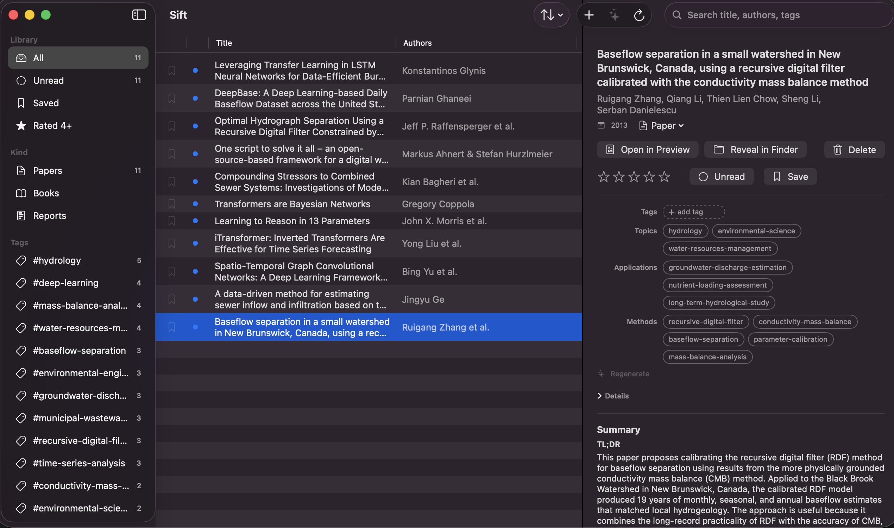

Native macOS app · Free
Keep track of the papers you read,
so you can find them again.
A fast, native macOS app to collect → tag → rate → recall papers, books, and reports. Plain files in a folder you own. No account, no subscription.
macOS 14 or later · Apple Silicon & Intel · ~latest release on GitHub
Reference managers got heavy. Sift didn't.
Collect a paper the moment you find it, tag it, rate it, and find it again months later. That's the whole loop.
-
It's yours, as plain files
Each paper is a PDF plus a small JSON file. Open, back up, grep, or sync it yourself. No lock-in.
-
Fast and native
A native Mac app that launches instantly and opens PDFs in Preview. Small and quick.
-
No account, no tracking
No login, no telemetry. Download it once and it's yours.
-
Smart only if you want
Add Claude Code or Ollama and Sift auto-tags and summarizes locally. Skip them and everything else still works.
Sync is just iCloud Drive
Keep your library folder in iCloud Drive and macOS syncs it across your Macs. No sync server, no account.
The part that saves you money
Zotero charges past its 300 MB free tier ($20/$60/$120 a year for 2/6/unlimited GB), and PDFs pass that quickly. Sift runs no storage at all, so your papers use the iCloud space you already pay for. The free 5 GB alone is about 16× Zotero's free limit.
If you already pay for the cloud, you don't also pay for the reference manager's cloud.
A look at the app
Three panes: filter on the left, your library in the middle, the paper's details on the right.

Install in three steps
This build is signed ad-hoc (not notarized), so Gatekeeper warns on first launch. The right-click trick is needed once.
-
Download the DMG
Grab
Sift-<version>.dmgfrom the latest release. -
Drag to Applications
Open the DMG and drag
Sift.appinto yourApplicationsfolder. -
Right-click → Open
Right-click the app, choose Open, then Open again to clear the first-launch warning.
Free · macOS 14+ · no account required
Deliberately simple
Sift stays focused on cataloging the papers you read. A few deliberate choices keep it fast and out of your way.
-
Reading happens in Preview
Sift opens PDFs in Preview, where macOS already handles reading and annotations well.
-
A focused catalog
No BibTeX, RIS, or DOI export today. It could arrive later as an optional add-on.
-
Sync through iCloud Drive
No account and no push service: expect a few seconds of delay, and never a login screen.